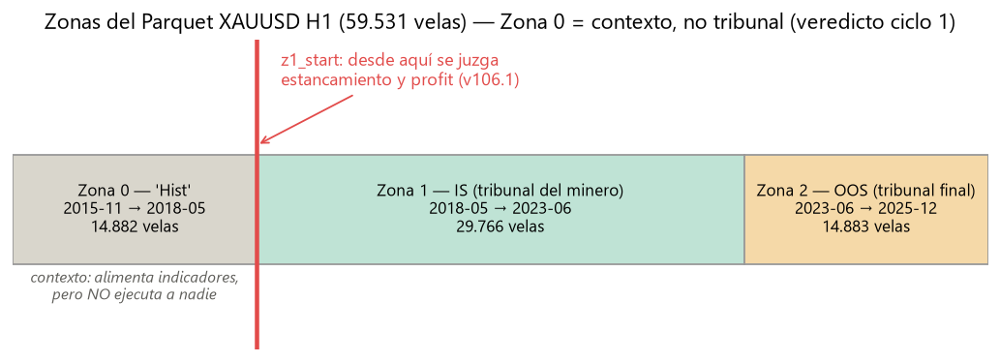
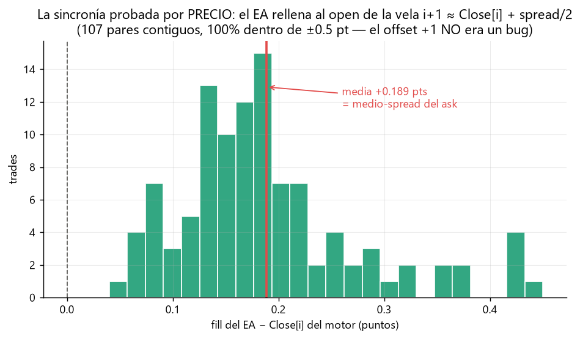
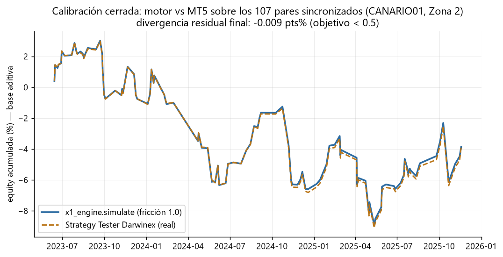
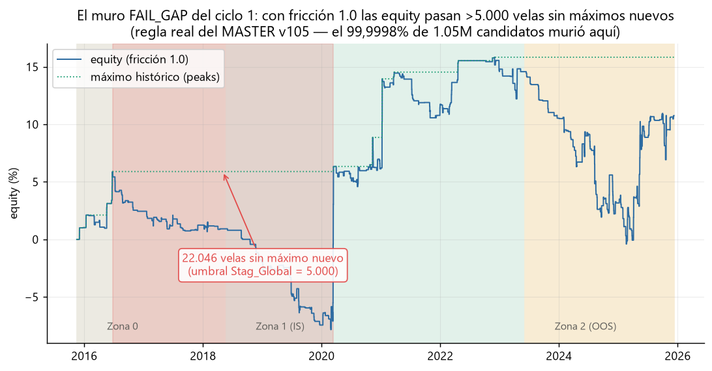
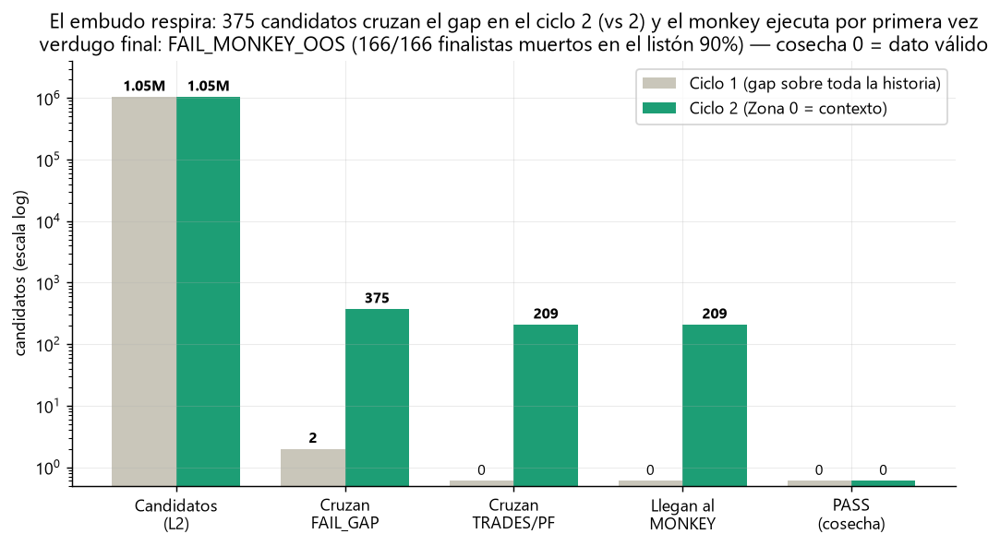
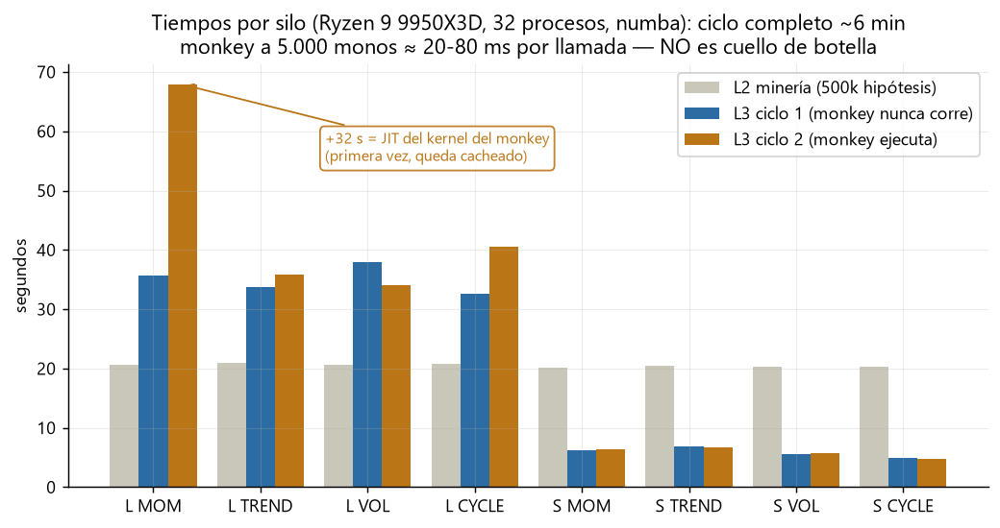

Estado actual (2026-06-12)
Pipeline completo validado de punta a punta en blanca: calibración Python↔MT5 CERRADA
(match de precios 96,7%, divergencia residual de equity −0,009 pts%, gráficos 02-03)
y dos ciclos del commander con autopsia completa. El embudo está ordenado y el monkey activo y
letal: 166/166 finalistas muertos en el listón OOS 90% (gráfico 05). Cosecha 0 = dato
válido (ley pasos.txt).
Fase actual: leer el ciclo 2 entre todos. La conversación pendiente ya no es infraestructura sino minería: si el MONKEY_OOS al 90% sigue matando al 100% de los finalistas tras N ciclos, lo que falta es calidad de hipótesis (familias/ADN/targets), no más candidatos.
Tabla de resultados
| Hito | Qué se midió | Resultado | Veredicto |
|---|---|---|---|
| Deploy en blanca (fases 0-7) | venv 3.12 + numba/TA-Lib, 26 tests, Parquet v106 (287 cols), compilación de EAs | 26/26 tests · CANARIO01/02: 0 errors, 0 warnings | OK — blanca operativa |
| Calibración: sincronía por precio | fill del EA vs Close[i] del motor, 107 pares contiguos | media +0,189 pts (medio-spread), 100% dentro de ±0,5 pt | El offset +1 NO era bug: Close[i] = open[i+1] |
| Calibración: fricción y equity | coste real Darwinex vs assets.csv; equity motor vs tester | coste real 0,97 pts/trade vs 0,3 asumido (3,2×) → fricción a 1,0. Residual: −0,009 pts% (objetivo <0,5) | CERRADA — luz verde al commander |
| Ciclo 1 commander (XAUUSD H1) | 1.050.495 candidatos, 8 silos, monkey 5.000 armado | 0 cosechados — FAIL_GAP mata al 99,9998% (gráfico 04); el monkey ejecutó 0 veces | Muro detectado → veredicto notebook: opción (b) |
| Ciclo 2 (Zona 0 = contexto) | 1.050.122 candidatos con z1_start en L3; test 3/3 | 375 cruzan el gap (vs 2) · 209 llegan al monkey · 166/166 mueren en MONKEY_OOS 90% · monkey ≈ 20-80 ms/llamada | Embudo sano; cosecha 0 = dato válido |
Galería de gráficos

01Las tres zonas del Parquet y el veredicto del ciclo 1. Zona 0 (2015-2018) = contexto "Hist": alimenta indicadores pero no ejecuta a nadie. Desde z1_start se juzgan estancamiento y profit (v106.1). El minero selecciona en Z1; el tribunal final es Z2.

02★ La prueba decisiva de la sincronía (por PRECIO, no por etiqueta). Propuse "corregir" el shift del EA; la notebook lo rechazó y pidió esta prueba: el fill del EA = Close[i] del motor +0,189 pts de media = exactamente el medio-spread del ask. El offset +1 de etiqueta es la firma de la sincronía CORRECTA.

03Calibración cerrada: dos curvas, una encima de la otra. Motor (fricción 1,0) vs Strategy Tester Darwinex sobre los 107 pares sincronizados del canario: divergencia final −0,009 pts%. Con esto la simulación Python ES el tester, y la granja puede confiar en sus números.

04El muro del ciclo 1. Con fricción realista (1,0), las equity pasan decenas de miles de velas sin máximos nuevos contra un umbral de 5.000 — y el gap se medía desde 2015, incluyendo un régimen en el que nadie fue seleccionado. El 99,9998% de 1,05M candidatos murió aquí y el resto del embudo quedó ciego.

05★ El embudo respira tras la opción (b). 375 candidatos cruzan el gap (vs 2), 209 llegan al monkey y el verdugo final aparece por primera vez: FAIL_MONKEY_OOS mata 166/166 en el listón del 90%. Cosecha 0 pero el sistema funciona: nada de lo minado tiene edge OOS que supere al azar — todavía.

06El monkey NO es cuello de botella (medido, no supuesto). Ciclo completo ~6 min en el Ryzen. El +32 s de L MOM en el ciclo 2 es compilación JIT de primera vez (cacheada); después, cientos de monkey-calls de 5.000 monos cuestan 20-80 ms cada una. L3 es ~100% simulate() masivo: ~7.500 sims/s.
Incidencias y errores (cronológico)
- 2026-06-11 — Python del sistema era 3.14 (sin wheels de numba/TA-Lib). venv recreado con
py -3.12; TA-Lib 0.6.8 y numba 0.65.1 instalaron directo de pip (ya no hace falta la wheel manual del checklist). - 2026-06-11 — La regla de ejemplo del checklist usaba
rsi_14, que NO existe en la ADN v106 (períodos 5,8,13,21,34,55,89,144,200,24,48,120) →rsi_13. Además era contradictoria (ema_55 <= Closejunto a sobreventa): 0 entradas en motor Y en MT5. Desigualdad correcta:ema_55_sft >= Close_sft. - 2026-06-11 — pandas 3.0 eliminó
Series.view→astype('int64')en el comparador. - 2026-06-11 —
metaeditor64.exe /compiledevuelve exit code 1 incluso compilando perfecto: la verdad está en la líneaResult: 0 errorsdel log, no en el exit code. - 2026-06-11 — Cooldown del EA generado (24) ≠ motor (25): off-by-one silencioso.
generate_ea.pyahora toma el default deMin_Dist_Barsde assets.csv. - 2026-06-11 — L2 moría EN SILENCIO al redirigir stdout a archivo: Windows cp1252 no codifica el emoji 🚀 y el
exceptglobal convertía elUnicodeEncodeErroren "0 alphas" sin error visible. Todo el primer intento de ciclo minó cero. Fix:PYTHONUTF8=1en el runner. - 2026-06-11 — L3 no escribía el AUDIT json cuando la cosecha era 0 → la autopsia se perdía justo en el caso más informativo (mortalidad total). Parcheado: la telemetría se escribe SIEMPRE.
- 2026-06-11 — El fusible
monkey_testestaba enfalseenaudit_config.json: el monkey jamás habría corrido. Activado antes del ciclo 1. - 2026-06-11 — El Parquet de la COSECHA de Z: era el viejo de 213 cols sin High/Low (XS quedaba NaN). Regenerado v106 (287 cols) y subido con backup
.213cols.bak. - A vigilar — Jitter de umbral RSI(13) entre TA-Lib (Parquet) e iRSI (MT5): cerca del umbral disparan con 1 barra de diferencia (~8% de los trades del canario, offset +2). No bloquea; es slippage de implementación documentado.
Decisiones metodológicas
- La sincronía se prueba por PRECIO, no por etiqueta de vela: el motor entra a Close[i], que en MT5 es el open de la vela i+1. Mi propuesta de "corregir" el shift fue RECHAZADA por la notebook y refutada con datos (gráfico 02). Regla de oro: ante una divergencia de timing, comparar fills contra Close[i] antes de tocar código.
- Fricción XAUUSD = 1,0 pt (Slippage 0,1 / Spread 0,6 / Comm 0,3), calibrada contra el coste real Darwinex medido (0,97). Sin esto el auditor sobreestima el PF neto y la granja cosecha espejismos.
- Zona 0 = contexto, no tribunal (opción b del veredicto del ciclo 1): estancamiento y profit se juzgan desde z1_start. Nadie muere por no ganar en un régimen en el que no fue seleccionado. Test de regresión en
tests/test_L3_zona0.py. - Mortalidad altísima es el resultado esperado y correcto (ley pasos.txt). Cosecha 0 es un dato, no un fallo: el monkey al 99/90 está haciendo su trabajo.
- Telemetría siempre: cada ciclo escribe su AUDIT json aunque no coseche nada — la autopsia de los muertos es lo que dirige el siguiente movimiento.
- Canal blanca ↔ notebook = BITACORA.md en el repo (lo más nuevo arriba). Las decisiones de diseño llegan de la notebook; la evidencia empírica la produce blanca. Un ciclo por vez: el primer ciclo se lee entre todos antes de dejar la granja en bucle.
Pendientes
- EN CURSO: lectura del ciclo 2 entre todos (notebook + Mariano). Decisión grande: si MONKEY_OOS 90% sigue al 100% letal, atacar calidad de hipótesis (familias/ADN/targets), no cantidad.
- SHORT casi sin candidatos ya en L2 (284-4.587 vs ~250k LONG): ¿minar SHORT con otro criterio o aceptar que el oro alcista no da SHORT netos?
- Dejar la granja en bucle (commander.py) — solo cuando se apruebe tras la lectura del ciclo 2.
- Backtest del canario con salida SINTETICA_REVERSE (CANARIO02) para calibrar también la rotura de regla bar-a-bar en MT5.
- Jitter de umbral RSI TA-Lib vs iRSI: cuantificar si escala con más indicadores (CMO/MFI) o queda en ~8%.
- EURUSD y USATECH: repetir deploy de datos (L1) y calibración de fricción por símbolo antes de minarlos.
Cómo actualizar esta bitácora: los PNG numerados viven en
docs/graficos/
y se regeneran con python tools/graficar_bitacora.py (lee el Parquet, la calibración
del canario y los AUDIT reales — no hay números dibujados a mano). Hito nuevo = generar el PNG
en ese script, agregar la card acá y la entrada cronológica en BITACORA.md.